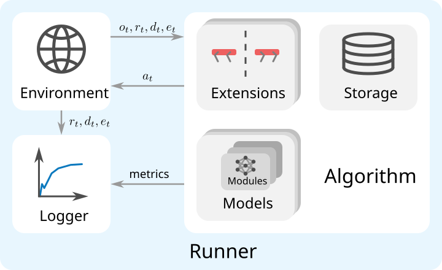
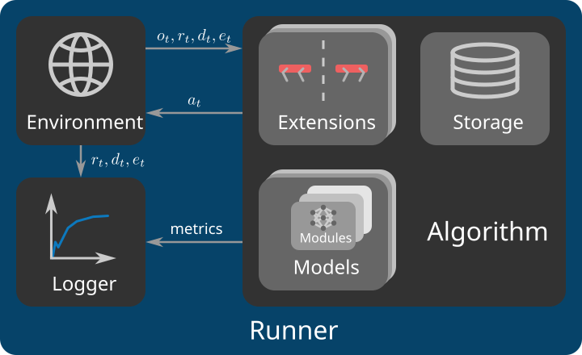

Overview¶
This guide provides an overview of the features and structure of RSL-RL. After introducing the currently available features, we explain the core components and additional components of the library. Finally, we provide a minimal example of how to integrate RSL-RL into a project.(本指南概述了 RSL-RL 的功能和结构。在介绍当前可用的功能之后，我们将解释该库的核心组件和附加组件。最后，我们提供了一个关于如何将 RSL-RL 集成到项目中的最小示例。)
Library Features¶
RSL-RL is intentionally kept minimal and focuses on a small set of components that cover common robotics workflows while remaining easy to adapt. The following sections summarize the main features currently available.(RSL-RL 有意保持最小化，专注于一小部分组件，这些组件涵盖常见的机器人工作流，同时易于适应。以下部分总结了当前可用的主要功能。)
Algorithms¶
PPOPPO is a model-free, on-policy RL algorithm for continuous control. In each iteration, the algorithm collects rollouts, computes GAE-based return targets, and optimizes actor and critic losses over multiple mini-batches. The implementation includes clipped surrogate and value losses, entropy regularization, gradient clipping, and optional adaptive learning-rate scheduling based on the observed KL divergence.(PPO 是一种用于连续控制的无模型、同策略强化学习算法。在每次迭代中，该算法收集轨迹，计算基于 GAE 的回报目标，并在多个小批量上优化策略和价值网络损失。该实现包括裁剪的代理损失和价值损失、熵正则化、梯度裁剪，以及基于观察到的 KL 散度的可选自适应学习率调度。)
DistillationDistillation is a student-teacher behavior cloning algorithm. During data collection, the student acts while the teacher provides supervision targets. The student is then optimized with a configurable behavior loss, making this algorithm useful for transferring policies from training-time privileged observation sets to observations available during real-world deployment.(蒸馏是一种师生行为克隆算法。在数据收集期间，学生执行动作，而教师提供监督目标。然后使用可配置的行为损失对学生进行优化，这使得该算法可用于将策略从训练时的特权观测集迁移到实际部署时可用的观测。)
Models¶
MLPModelA feed-forward baseline model for actor, critic, student, or teacher networks. It concatenates selected observation groups, optionally normalizes them, processes them through an MLP, and optionally maps outputs through a stochastic action distribution.(一种用于策略、价值、学生或教师网络的前馈基线模型。它连接选定的观测组，可选地对它们进行归一化，通过 MLP 处理它们，并可选择通过随机动作分布映射输出。)
RNNModelA recurrent extension of the
MLPModelfor partially observable settings. The recurrent network can be either a Long Short-Term Memory (LSTM) or a Gated Recurrent Unit (GRU). Its output is passed through the MLP to produce the final output.(MLPModel的循环扩展，用于部分可观测环境。循环网络可以是长短期记忆网络 (LSTM) 或门控循环单元 (GRU)。其输出通过 MLP 传递以产生最终输出。)CNNModelA model for mixed 1D + 2D observations. It combines an MLP pathway for 1D observations with one or more CNN encoders for 2D observations. Each 2D observation group is encoded with a separate CNN encoder that can be configured independently. When used in conjunction with
PPO, the encoders may be shared between actor and critic to save memory.(一种用于混合 1D + 2D 观测的模型。它将用于 1D 观测的 MLP 通路与一个或多个用于 2D 观测的 CNN 编码器相结合。每个 2D 观测组由一个可独立配置的单独 CNN 编码器进行编码。当与PPO结合使用时，编码器可以在策略和价值网络之间共享以节省内存。)
Distributions¶
GaussianDistributionA diagonal Gaussian distribution with state-independent standard deviation parameters. The mean is produced by the model’s MLP network output, while the standard deviation is learned globally and can use either a scalar or a log-scale.(一种对角高斯分布，具有状态无关的标准差参数。均值由模型的 MLP 网络输出产生，而标准差是全局学习的，可以使用标量或对数尺度。)
HeteroscedasticGaussianDistributionA diagonal Gaussian distribution with state-dependent standard deviation. The model’s MLP network predicts both mean and standard-deviation terms per sample, allowing uncertainty to vary with the observation. As with the standard Gaussian variant, both scalar and log-scale parameterizations are supported.(一种具有状态相关标准差的对角高斯分布。模型的 MLP 网络为每个样本预测均值和标准差项，允许不确定性随观测变化。与标准高斯变体一样，支持标量和对数尺度参数化。)
Extensions¶
RandomNetworkDistillationRandom Network Distillation (RND) adds an intrinsic reward based on the prediction error between a trainable predictor network and a fixed target network. The implementation supports selecting dedicated observation groups for curiosity, optional state and reward normalization, and configurable weight schedules for annealing the intrinsic reward contribution over the training. This extension is compatible with the
PPOalgorithm. For more details, please check this paper.(随机网络蒸馏 (RND) 基于可训练的预测网络与固定目标网络之间的预测误差添加内在奖励。该实现支持选择用于好奇心的专用观测组、可选的状态和奖励归一化，以及用于在训练过程中退火内在奖励贡献的可配置权重调度。此扩展与PPO算法兼容。更多详情请参阅 本文。)- Symmetry¶
Symmetry augments the collected environment interaction data with mirrored data using a user-provided symmetry function that defines how observations and actions are transformed. This can improve sample efficiency and promote symmetric behaviors for robots with structured morphology. Additionally, a mirror-loss regularization term can be added to the loss function to actively encourage symmetry in the policy. This extension is compatible with the
PPOalgorithm. For more details, please check this paper.(对称性使用用户提供的对称函数（定义观测和动作如何变换）用镜像数据增强收集到的环境交互数据。这可以提高样本效率，并促进具有结构化形态的机器人的对称行为。此外，可以在损失函数中添加镜像损失正则化项，以主动鼓励策略中的对称性。此扩展与PPO算法兼容。更多详情请参阅 本文。)
Loggers¶
- TensorBoard
The default local logging backend for scalar metrics.(用于标量指标的默认本地日志记录后端。)
- Weights & Biases
Cloud-based experiment tracking with support for remote monitoring and model uploads.(基于云的实验跟踪，支持远程监控和模型上传。)
- Neptune
A cloud-based experiment tracking alternative to W&B.(一种基于云的实验跟踪替代方案，类似 W&B。)
All logging backends are accessed through a common logger interface, and can be used with both single-GPU and distributed multi-GPU training workflows.(所有日志记录后端都通过一个通用的记录器接口访问，并且可以用于单 GPU 和分布式多 GPU 训练工作流。)
Core Components¶
RSL-RL consists of four core components: Runners, Algorithms, Models, and Modules, implementing the learning loop, algorithmic logic, and neural network architectures. In conjunction with the library’s additional components: Environment, Storage, Extensions, and Utils, described in the next section, they form a complete learning pipeline.(RSL-RL 由四个核心组件组成：Runners、Algorithms、Models 和 Modules，它们实现了学习循环、算法逻辑和神经网络架构。与下一节描述的库的附加组件：Environment、Storage、Extensions 和 Utils 相结合，它们构成了完整的学习流程。)
{kind=link}

{kind=link}

Note
In the following, functions are linked to implementations for a standard PPO training
pipeline. Other learning pipelines may have different implementations of these functions.(在下文中，函数链接到标准 PPO 训练流程的实现。其他学习流程可能对这些函数有不同的实现。)
Runners¶
The Runner implements the main learning loop in learn() and
coordinates the interaction with the Environment. It is the main API of the library, providing functionality for
saving, loading, and exporting checkpoints and models via save(),
load(),
export_policy_to_jit(),
and export_policy_to_onnx(). Additionally, it coordinates the
initialization of the multi-GPU pipeline, the Algorithm, and the Logger.(Runner 在 learn() 中实现主学习循环，并协调与 Environment 的交互。它是库的主要 API，通过 save()、load()、export_policy_to_jit() 和 export_policy_to_onnx() 提供保存、加载和导出检查点及模型的功能。此外，它还协调多 GPU 流程、Algorithm 和 Logger 的初始化。)
Algorithms¶
The Algorithm implements the logic of the core learning process. It is responsible for acting on the observations
provided by the Environment in act(), processing data collected from the
environment interaction in process_env_step(), and updating the parameters of the
learnable Model instances in update(). The Algorithm can make use of a
Storage instance to store collected environment interaction data. The Algorithm manages one or more Model
instances and possibly algorithmic Extensions, which are initialized in
construct_algorithm().(Algorithm 实现了核心学习过程的逻辑。它负责在 act() 中根据 Environment 提供的观测采取行动，在 process_env_step() 中处理从环境交互中收集的数据，并在 update() 中更新可学习 Model 实例的参数。Algorithm 可以使用 Storage 实例来存储收集到的环境交互数据。Algorithm 管理一个或多个 Model 实例以及可能的算法 Extensions，这些扩展在 construct_algorithm() 中初始化。)
Models¶
The Model implements a neural network that is used by the Algorithm for different purposes. For example,
PPO uses Model instances for the actor and critic networks, while
Distillation uses Model instances for the student and teacher networks. The
forward() pass of a Model instance consists of three steps:(Model 实现了一个神经网络，供 Algorithm 用于不同目的。例如，PPO 使用 Model 实例作为策略网络和价值网络，而 Distillation 使用 Model 实例作为学生网络和教师网络。Model 实例的 forward() 前向传播包含三个步骤：)
A latent is computed from raw observations in
get_latent(). This may involve normalization, recurrent processing forRNNModelinstances, or convolutional encoding forCNNModelinstances.(从原始观测中通过get_latent()计算潜在向量。这可能涉及归一化、RNNModel实例的循环处理，或CNNModel实例的卷积编码。)The latent is passed to a Multi-Layer Perceptron (MLP).(潜在向量被传递给一个多层感知机 (MLP)。)
The output of the MLP is either returned as is or used to sample from a
Distribution, in case stochastic outputs are requested.(如果请求随机输出，MLP 的输出将按原样返回，或用于从Distribution中采样。)
The Model acts as a unified interface for the Algorithm and coordinates all Module instances needed to implement a certain network architecture.(Model 充当 Algorithm 的统一接口，并协调实现特定网络架构所需的所有 Module 实例。)
Modules¶
A Module implements a building block for the Model. This could be a neural network, such as the
MLP, a normalizer, such as
EmpiricalNormalization, or a distribution, such as the
GaussianDistribution. Modules are initialized in the Model constructor and
managed by the Model.(Module 为 Model 实现了一个构建块。这可以是一个神经网络，例如 MLP；一个归一化器，例如 EmpiricalNormalization；或一个分布，例如 GaussianDistribution。模块在 Model 构造函数中初始化，并由 Model 管理。)
Additional Components¶
Additional Components support the core components by either defining interfaces, adding optional functionality, or providing utilities, such as data storage or logging.(附加组件通过定义接口、添加可选功能或提供工具（如数据存储或日志记录）来支持核心组件。)
Environment¶
The Environment implements an abstract interface that is used by the Runner to interact with the environment.
Next to some required attributes, the Environment must implement the step()
and get_observations() methods.(Environment 实现了一个抽象接口，供 Runner 与环境交互。除了一些必需的属性外，Environment 还必须实现 step() 和 get_observations() 方法。)
Storage¶
The Storage implements a storage buffer that is used by the Algorithm to store collected environment interaction
data. It returns the data to the Algorithm for its update() in a suitable format,
for example in mini-batches.(Storage 实现了一个存储缓冲区，供 Algorithm 存储收集到的环境交互数据。它以合适的格式（例如小批量）将数据返回给 Algorithm 用于其 update() 方法。)
Extensions¶
An Extension implements an augmentation to a specific Algorithm to modify its behavior. Currently, RSL-RL does not constrain the way an Extension may be implemented, allowing for arbitrary modifications to the learning process.(Extension 实现了对特定 Algorithm 的增强，以修改其行为。目前，RSL-RL 不限制 Extension 的实现方式，允许对学习过程进行任意修改。)
Utils¶
Utils include various helpers for the library, such as a Logger to record the learning
process, or functions to resolve configuration settings.(Utils 包含库的各种辅助工具，例如用于记录学习过程的 Logger，或用于解析配置设置的函数。)
Example Integration¶
The following example shows a simple training script which 1) creates an environment, 2) loads a YAML configuration, 3)
initializes an OnPolicyRunner, 4) runs the training, and 5) exports the
trained policy for deployment. The environment is defined by the user and must implement the
VecEnv interface. The configuration setup is described in the
configuration guide.(以下示例展示了一个简单的训练脚本，它：1) 创建一个环境，2) 加载一个 YAML 配置，3) 初始化一个 OnPolicyRunner，4) 运行训练，5) 导出训练好的策略以供部署。环境由用户定义，并且必须实现 VecEnv 接口。配置设置在 配置指南 中描述。)
import yaml
from rsl_rl.runners import OnPolicyRunner
# 1) Create your environment (usually provided by environment libraries such as Isaac Lab)
# 1) 创建您的环境（通常由环境库提供，如 Isaac Lab）
env = make_env()
# 2) Load a YAML configuration and extract the configuration dictionary expected by RSL-RL
# 2) 加载一个 YAML 配置，并提取 RSL-RL 期望的配置字典
with open("config/my_training.yaml", "r", encoding="utf-8") as f:
full_cfg = yaml.safe_load(f)
train_cfg = full_cfg["runner"]
# 3) Build the runner
# 3) 构建 runner
runner = OnPolicyRunner(
env=env,
train_cfg=train_cfg,
log_dir="logs/my_experiment", # Directory for saving checkpoints and logs
device="cuda:0", # Device to run the training on
)
# 4) Start training
# 4) 开始训练
runner.learn(num_learning_iterations=1500) # Specify the number of desired iterations
# 5) Export the trained policy for deployment
# 5) 导出训练好的策略以供部署
runner.export_policy_to_jit("logs/my_experiment/exported", filename="policy.pt")
runner.export_policy_to_onnx("logs/my_experiment/exported", filename="policy.onnx")
A trained policy can later be loaded to continue a previous training or to be replayed for evaluation as in the following replay script:(训练好的策略可以在以后加载，以继续之前的训练或用于评估回放，如下面的回放脚本所示：)
import yaml
from rsl_rl.runners import OnPolicyRunner
# 1) Create your environment (usually provided by environment libraries such as Isaac Lab)
# 1) 创建您的环境（通常由环境库提供，如 Isaac Lab）
env = make_env()
# 2) Load the YAML configuration used during training
# 2) 加载训练期间使用的 YAML 配置
with open("config/my_training.yaml", "r", encoding="utf-8") as f:
full_cfg = yaml.safe_load(f)
train_cfg = full_cfg["runner"]
# 3) Build the runner
# 3) 构建 runner
runner = OnPolicyRunner(
env=env,
train_cfg=train_cfg,
device="cuda:0",
)
# 4) Load the trained policy
# 4) 加载训练好的策略
runner.load("logs/my_experiment/model_1499.pt")
# 5) Get the inference policy
# 5) 获取推理策略
policy = runner.get_inference_policy()
# 6) Run the policy in the environment for 1000 steps
# 6) 在环境中运行策略 1000 步
obs = env.get_observations()
for _ in range(1000):
actions = policy(obs)
obs, rewards, dones, extras = env.step(actions)